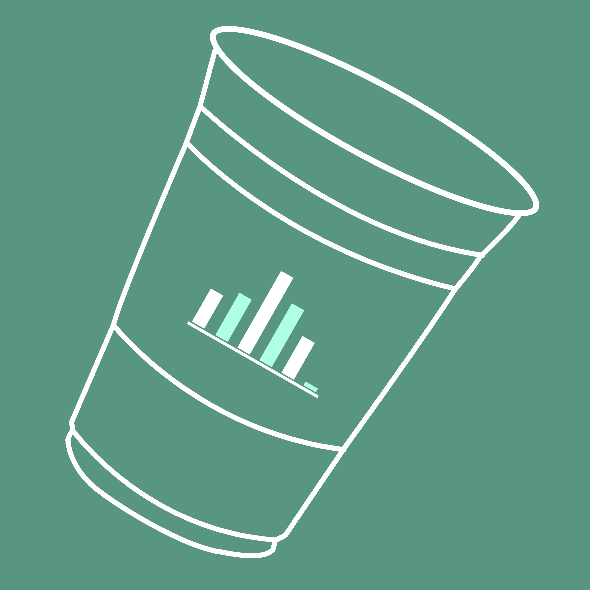

AlcoTrack
AlcoTrack - Alcohol Tracker is a personal blood alcohol content tracker built exclusively for iOS devices This application allows the user to log his/her drinks on an iPhone or AppleWatch so that the app can calculate his/her blood alcohol content and display it back. A planned objective for this app is for it to be able to approximately be able to predict when a user will get drunk and notify him/her before it happens. AlcoTrack is still in development.
The primary problem this application attempts to solve is that there is no good iOS (to date) alternative to the AlcoDroid application (exlusive for Android devices), and that many iOS users are looking for good iOS alternatives for the AlcoDroid application. In addition, the AlcoTrack application attempts to make a statistical analysis on the user's input drink data in order to predict with a moderate to percise accuracy when the user will get intoxicated by alcohol and notify him/her before that happens. AlcoTrack also facilitates the process of logging drinks into the application through the use of the application on the AppleWatch, to make it as easy and fast as possible for users to log their drinks into the application and for the app to work properly. This application works best when the user actually feeds it with his/her drinking information whenever he/she is drinking, and the more information it receives, the better the application can predict when a user will get intoxicated by alcohol.
Mastered abilities
- iOS mobile application development
- Apple Watch application development
- Swift
- XCode
- Implementation of propper software engineering
- Proper and complete building of documentation for the application
- Ad implementation on the application